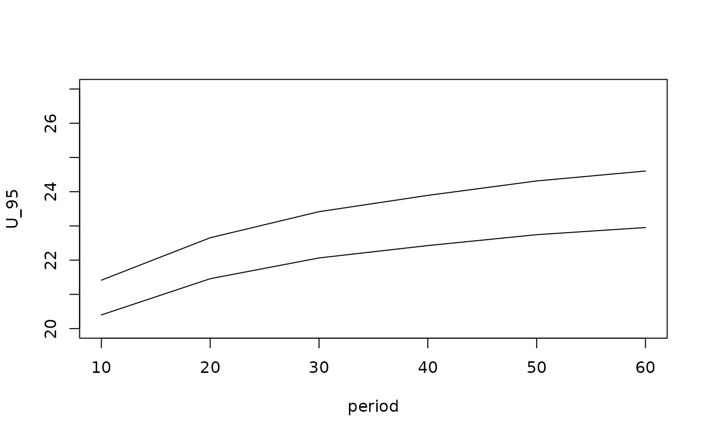

Prediction of Return Levels for a NSGEV object
A NSGEV model.
A numeric vector giving the periods at which the Return Levels will be computed.
A data frame containing the covariates needed. Each row represents a block with unit duration.
Not used yet. See the RL
function. For now, the RL period that are greater than
nrow(newdata) are discarded in the computation.
The type of Return Level as in RL.
The type of Confidence Interval (CI) to compute.
The value "delta" leads to using the delta method,
and "proflik" leads to using the profile-likelihood method.
The Confidence Levels at which the CI will be
computed. For "proflik" CI, only one level can be given
for now.
Level of verbosity.
Not used yet.
A list with several elements.
A data frame with the predicted RLs and the related CIs, with one row by block.
When confInt is equal to "proflik",
this element is a matrix with its row \(i\) giving the value
\(\boldsymbol{psi}^\star\) of the vector of parameters
that maximizes the Return Level \(\rho(T)\) with period \(T =
T_i\) under the constraint on the log-likelihood. Since most often
the rows are close enough, a significant reduction of the
computing time could be achieved in the near future by using the
same value of \(\boldsymbol{\psi}\) for all the Return
Periods.
For the profile-likelihood method, the determination of the confidence intervals is quite slow because a constrained optimization problem is solved for each period.
Future versions might allow different durations across blocks by
using dedicated arguments. For now it must be kept in mind that
the periods are understood as multiple of a constant block
duration. So if newdata has 100 rows the maximal
Return Period that can be used without resampling is 100.
example(as.NSGEV.fevd)
#>
#> a.NSGE> require(extRemes)
#>
#> a.NSGE> ## see the examples for extRemes::fevd.
#> a.NSGE> data(PORTw)
#>
#> a.NSGE> ## fit a GEV model
#> a.NSGE> fit <- fevd(x = TMX1, data = PORTw,
#> a.NSGE+ location.fun = ~AOindex, scale.fun = ~AOindex,
#> a.NSGE+ units = "deg C")
#>
#> a.NSGE> ## coerce
#> a.NSGE> ns <- as.NSGEV(fit)
L.delta <- predict(ns, period = seq(from = 10, to = 68, by = 10),
RLType = "exceed")
#> Warning: Recycling array of length 1 in vector-array arithmetic is deprecated.
#> Use c() or as.vector() instead.
#> Warning: Recycling array of length 1 in vector-array arithmetic is deprecated.
#> Use c() or as.vector() instead.
#> Warning: Recycling array of length 1 in vector-array arithmetic is deprecated.
#> Use c() or as.vector() instead.
#> Warning: Recycling array of length 1 in vector-array arithmetic is deprecated.
#> Use c() or as.vector() instead.
#> Warning: Recycling array of length 1 in vector-array arithmetic is deprecated.
#> Use c() or as.vector() instead.
#> Warning: Recycling array of length 1 in vector-array arithmetic is deprecated.
#> Use c() or as.vector() instead.
plot(U_95 ~ period, data = L.delta$RL, ylim = c(20, 27), type = "l")
lines(quant ~ period, data = L.delta$RL)

## much slower, but much trustier!
if (FALSE) { # \dontrun{
L.proflik <- predict(ns, period = seq(from = 10, to = 68, by = 10),
RLType = "exceed", confInt = "proflik")
plot(U_95 ~ period, data = L.proflik$RL, ylim = c(20, 30), type = "l")
lines(quant ~ period, data = L.proflik$RL)
} # }